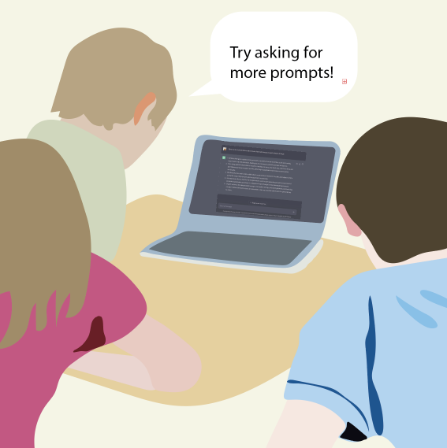
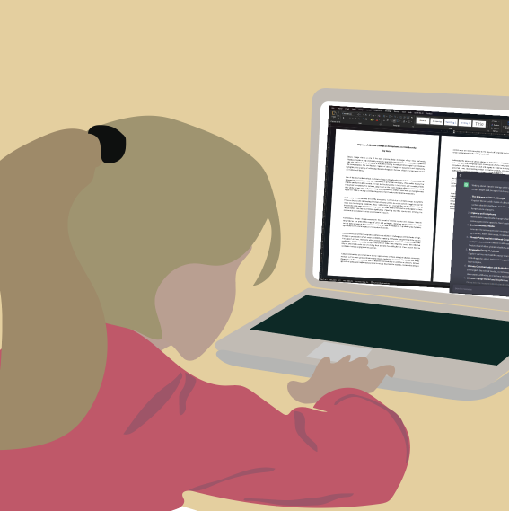

Sarah (12 years old) composes prompts for an AI chatbot to generate essay outlines.
Writing an essay with AI to support creative writing

Sarah edits the AI-generated outline to bring her voice into the work.


Mr. Hanson grades Sarah’s essays based on the rubric he typically uses for essay-writing activities.
I gave 7th-grade students the assignment to write an essay about the impact of climate change. Students were allowed to use a dialogue-based chatbot to support their writing process. They were encouraged to ask for the tool to support the development of outlines, editing content, and improving their language choice. The AI-generative technology sparked joy and fostered a range of writing practices. When I received the essays, I graded them based on my original rubric.
Support Materials
View Appendix.

Conversation Prompts
Based on OECD AI principles.
Inclusive growth, sustainable development, and well-being
- Should AI assistance be used by students and how? How can student voice and creativity be supported with AI chatbots?
Human-centered values and fairness
- How should educators assess AI-assisted student essays?
Transparency and explainability
- How is an AI-based chatbot different from using an encyclopedia or a language editor for essay writing?
Additional Information
AI chatbots (e.g., ChatGPT) are based on large language models, which are programs trained on very big datasets to generate answers. AI chatbots can answer questions on a range of topics and offer possibilities for student-centered and project-based learning (Kasneci et al., 2023). In the context of writing an essay, AI chatbots can support students in outlining and structuring their essays, editing content, improving rhetorics, and fine-tuning their language (Levine, 2023). AI chatbots can also become conversational partners that contribute ideas to youths’ creative productions that students can edit to ensure their work reflects their voice. AI chatbots can also support formative assessment by providing individualized and productive feedback (Seßler et al., 2023).
Reference
Levine, S. (2023, July 13). Researching writing [Conference session]. Pens & Pixels: Generative AI in Education, Los Angeles, United States. https://www.pensandpixels.org/
Kasneci, E., Sessler, K., Küchemann, S., Bannert, M., Dementieva, D., Fischer, F., Gasser, U., Groh, G., Günnemann, S., Hüllermeier, E., Krusche, S., Kutyniok, G., Michaeli, T., Nerdel, C., Pfeffer, J., Poquet, O., Sailer, M., Schmidt, A., Seidel, T., . . . Kasneci, G. (2023). ChatGPT for good? On opportunities and challenges of large language models for education. Learning and Individual Differences, 103, 102274. https://doi.org/10.1016/j.lindif.2023.102274
Seßler, K., Xiang, T., Bogenrieder, L., & Kasneci, E. (2023). PEER: Empowering writing with large language models. In Lecture Notes in Computer Science (pp. 755–761). https://doi.org/10.1007/978-3-031-42682-7_73
Explorer other scenarios
AI SUPER HERO

Develop an AI super hero and create stories by using image-generative AI and art materials. Print it in a comic book style.
THE TIME CAPSULE

Use image-generative AI and materials to craft a message explaining AI and its ethical considerations to a future civilization.